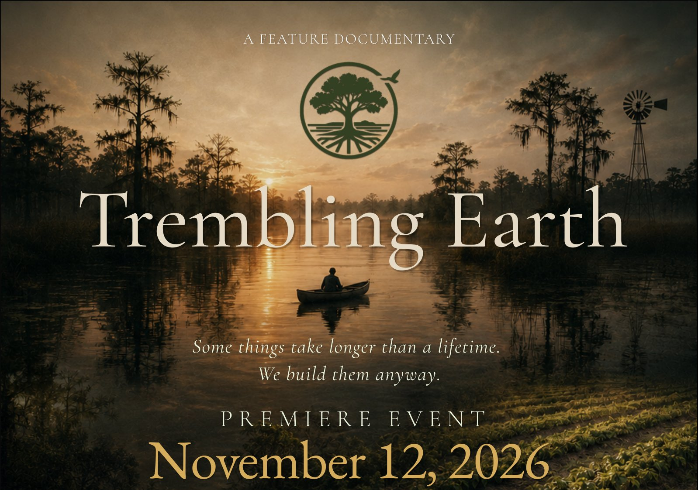

$100
Premiere Ticket
Provides 12 baby chicks to help establish a sustainable source of fresh eggs for Trinity Rescue Mission.
Includes one premiere seat Get tickets →Some things take longer than a lifetime. We build them anyway.
A Film About Legacy. An Evening That Creates One.
Join us for the premiere of Trembling Earth, a new documentary exploring The Farm at Okefenokee, regenerative agriculture, community, and the question at the heart of it all:
What does it mean to build something meant to outlive us?

Near the Okefenokee, one of America's most extraordinary natural landscapes, Jeff Meyer and Doug Davis are building The Farm at Okefenokee, a regenerative farm and intentional community designed to endure beyond its founders.
Trembling Earth follows their effort to turn that vision into a living legacy.
Set against the timeless landscape of the Okefenokee, the film explores the connections between land, food, community, and purpose, and asks what each generation owes the ones that follow.
Every ticket includes admission to the premiere and directly supports Trinity Rescue Mission and the Regenerative Farm Initiative, a partnership creating agricultural training, meaningful work, and fresh food for women participating in Trinity's recovery programs.
Provides 12 baby chicks to help establish a sustainable source of fresh eggs for Trinity Rescue Mission.
Includes one premiere seat Get tickets →
Provides clothing, aprons, and garden tools for women working alongside The Farm's agricultural team.
Includes one premiere seat and the VIP reception Sponsor for $500 →
Funds a roll-out laying box for up to 75 hens, helping expand Trinity's fresh egg program.
Includes one premiere seat and the VIP reception Sponsor for $500 →
Provides Trinity Rescue Mission with a Meishan sow, helping establish a sustainable heritage livestock breeding program.
Includes one premiere seat and the VIP reception Sponsor for $1,000 →Phase One is the 126-acre farm and the permanent home for 24 women that the film points toward. A gift of any size goes to that work.
On November 12, the ideas explored on screen will become action.
Your ticket helps provide animals, equipment, tools, fresh food, agricultural skills, and meaningful opportunities through the Regenerative Farm Initiative.